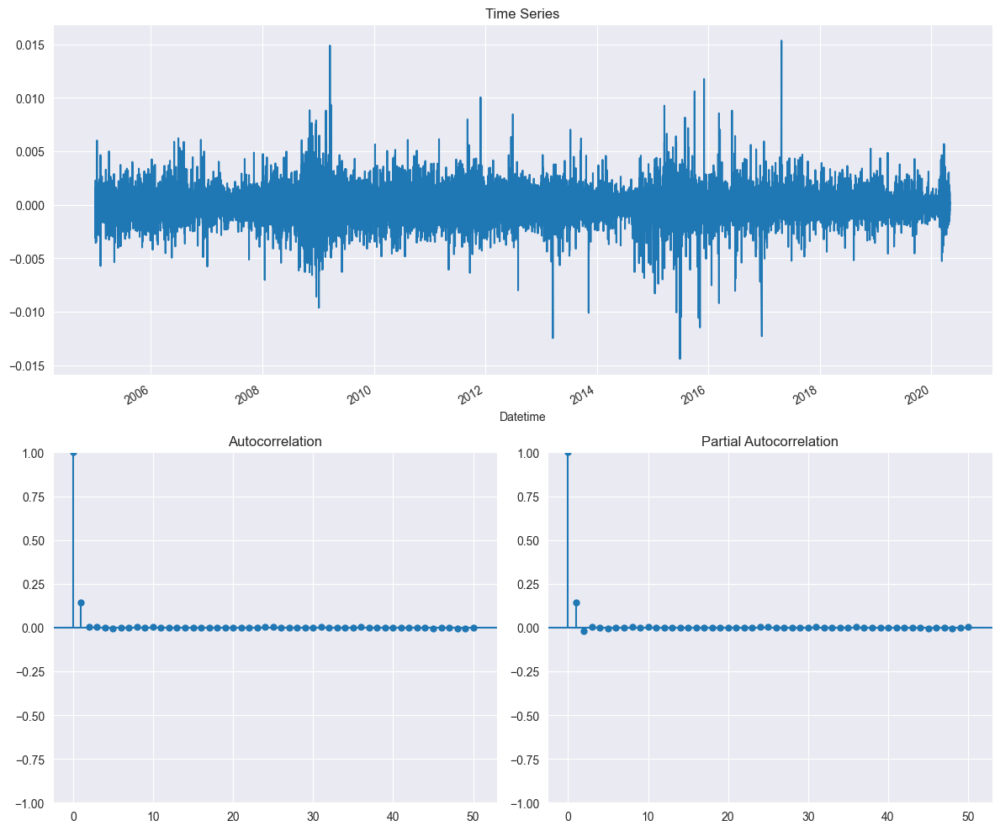
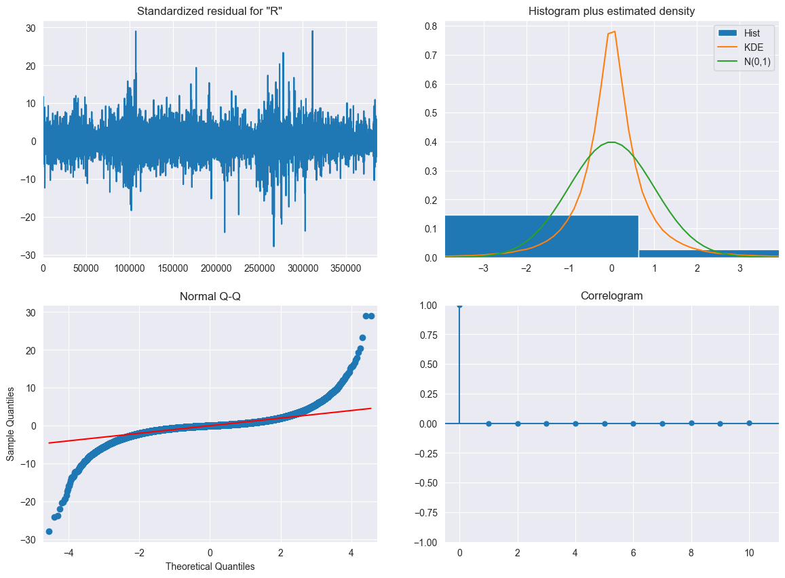
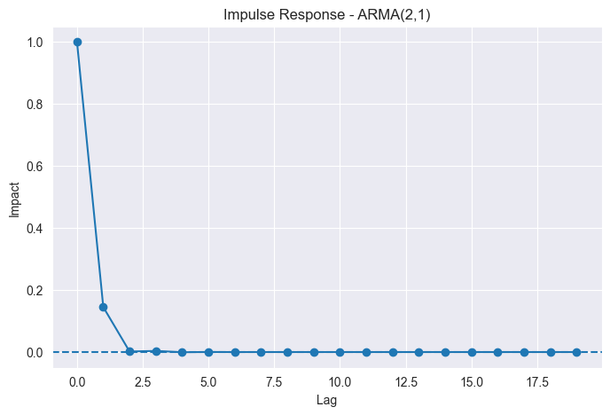
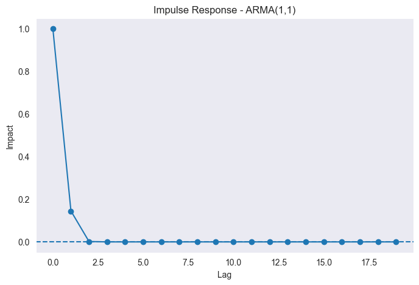
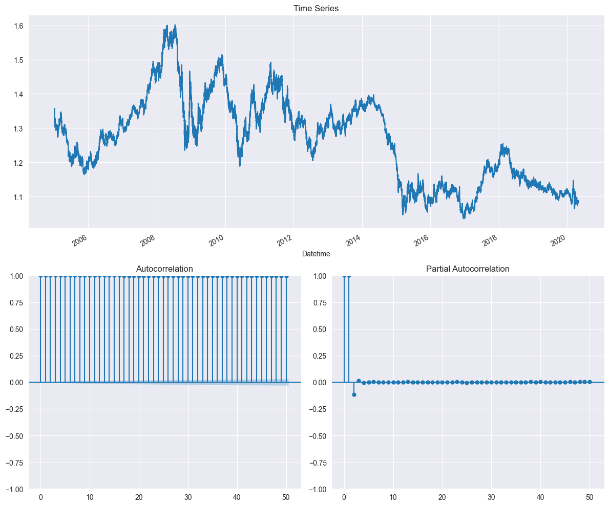
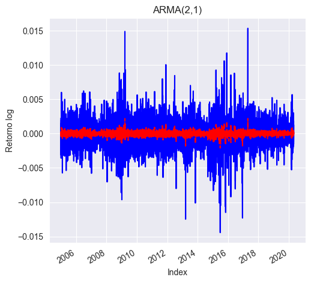
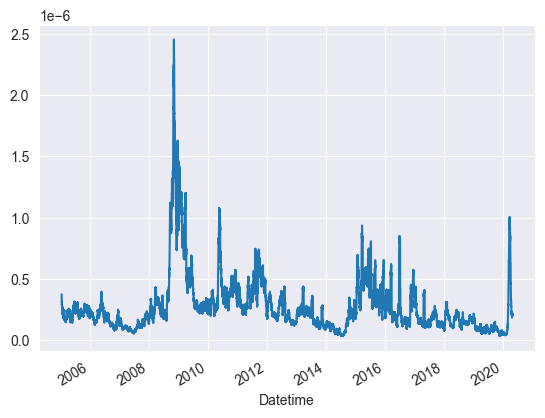
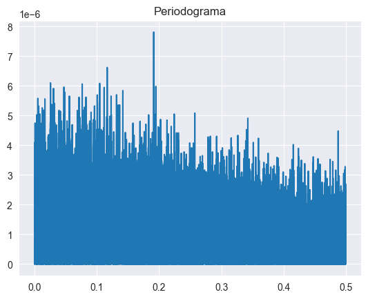
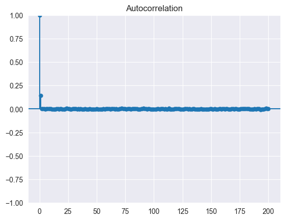
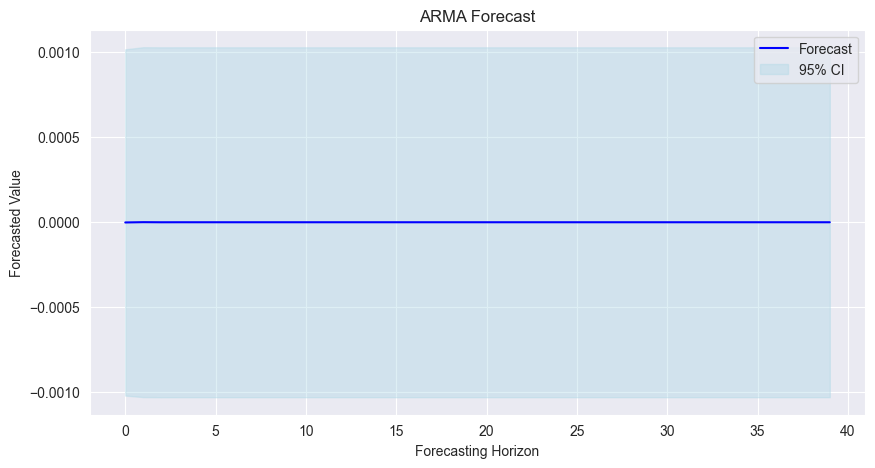

Modelo Arima#
from IPython.display import display, Markdown
from IPython import get_ipython
FUENTE = "Fuente: OANDA Brokerage (Kaggle; Imetomi, 2021); elaboración propia."
def agregar_fuente_post_celda(result):
# Mostrar SIEMPRE (más estable)
display(Markdown(f"<sub>{FUENTE}</sub>"))
ip = get_ipython()
# limpiar registros anteriores
try:
while True:
ip.events.unregister("post_run_cell", agregar_fuente_post_celda)
except:
pass
ip.events.register("post_run_cell", agregar_fuente_post_celda)
Fuente: OANDA Brokerage (Kaggle; Imetomi, 2021); elaboración propia.
import kagglehub
import os
# Download latest version
path = kagglehub.dataset_download("imetomi/eur-usd-forex-pair-historical-data-2002-2019")
C:\Users\planeacion\miniconda3\envs\ml_venv\lib\site-packages\tqdm\auto.py:21: TqdmWarning: IProgress not found. Please update jupyter and ipywidgets. See https://ipywidgets.readthedocs.io/en/stable/user_install.html
from .autonotebook import tqdm as notebook_tqdm
Warning: Looks like you're using an outdated `kagglehub` version (installed: 0.3.13), please consider upgrading to the latest version (1.0.0).
Fuente: OANDA Brokerage (Kaggle; Imetomi, 2021); elaboración propia.
for file in os.listdir(path):
print(file)
import pandas as pd
import numpy as np
import seaborn as sns
from matplotlib import pyplot as plt
df = pd.read_csv(os.path.join(path, "eurusd_minute.csv"))
# Combinar Date y Time para la el horario exacto
df_time = df.copy()
if 'Date' in df_time.columns and 'Time' in df_time.columns:
df_time['Datetime'] = pd.to_datetime(df_time['Date'] + ' ' + df_time['Time'])
df_time = df_time.set_index('Datetime')
df_time = df_time.drop(columns=['Date', 'Time'])
df_time = df_time.sort_index()
print(df_time.head())
print(df_time.shape)
eurusd_hour.csv
eurusd_minute.csv
eurusd_news.csv
---------------------------------------------------------------------------
KeyboardInterrupt Traceback (most recent call last)
Cell In[3], line 7
5 import seaborn as sns
6 from matplotlib import pyplot as plt
----> 7 df = pd.read_csv(os.path.join(path, "eurusd_minute.csv"))
8 # Combinar Date y Time para la el horario exacto
9 df_time = df.copy()
File ~\miniconda3\envs\ml_venv\lib\site-packages\pandas\io\parsers\readers.py:1026, in read_csv(filepath_or_buffer, sep, delimiter, header, names, index_col, usecols, dtype, engine, converters, true_values, false_values, skipinitialspace, skiprows, skipfooter, nrows, na_values, keep_default_na, na_filter, verbose, skip_blank_lines, parse_dates, infer_datetime_format, keep_date_col, date_parser, date_format, dayfirst, cache_dates, iterator, chunksize, compression, thousands, decimal, lineterminator, quotechar, quoting, doublequote, escapechar, comment, encoding, encoding_errors, dialect, on_bad_lines, delim_whitespace, low_memory, memory_map, float_precision, storage_options, dtype_backend)
1013 kwds_defaults = _refine_defaults_read(
1014 dialect,
1015 delimiter,
(...)
1022 dtype_backend=dtype_backend,
1023 )
1024 kwds.update(kwds_defaults)
-> 1026 return _read(filepath_or_buffer, kwds)
File ~\miniconda3\envs\ml_venv\lib\site-packages\pandas\io\parsers\readers.py:626, in _read(filepath_or_buffer, kwds)
623 return parser
625 with parser:
--> 626 return parser.read(nrows)
File ~\miniconda3\envs\ml_venv\lib\site-packages\pandas\io\parsers\readers.py:1923, in TextFileReader.read(self, nrows)
1916 nrows = validate_integer("nrows", nrows)
1917 try:
1918 # error: "ParserBase" has no attribute "read"
1919 (
1920 index,
1921 columns,
1922 col_dict,
-> 1923 ) = self._engine.read( # type: ignore[attr-defined]
1924 nrows
1925 )
1926 except Exception:
1927 self.close()
File ~\miniconda3\envs\ml_venv\lib\site-packages\pandas\io\parsers\c_parser_wrapper.py:236, in CParserWrapper.read(self, nrows)
234 chunks = self._reader.read_low_memory(nrows)
235 # destructive to chunks
--> 236 data = _concatenate_chunks(chunks)
238 else:
239 data = self._reader.read(nrows)
File ~\miniconda3\envs\ml_venv\lib\site-packages\pandas\io\parsers\c_parser_wrapper.py:376, in _concatenate_chunks(chunks)
374 result[name] = union_categoricals(arrs, sort_categories=False)
375 else:
--> 376 result[name] = concat_compat(arrs)
377 if len(non_cat_dtypes) > 1 and result[name].dtype == np.dtype(object):
378 warning_columns.append(str(name))
File ~\miniconda3\envs\ml_venv\lib\site-packages\pandas\core\dtypes\concat.py:78, in concat_compat(to_concat, axis, ea_compat_axis)
76 if isinstance(obj, np.ndarray):
77 to_concat_arrs = cast("Sequence[np.ndarray]", to_concat)
---> 78 return np.concatenate(to_concat_arrs, axis=axis)
80 to_concat_eas = cast("Sequence[ExtensionArray]", to_concat)
81 if ea_compat_axis:
82 # We have 1D objects, that don't support axis keyword
KeyboardInterrupt:
Fuente: OANDA Brokerage (Kaggle; Imetomi, 2021); elaboración propia.
df_15m = df_time.resample('15T').median().dropna()
df_15m['Retorno_log'] = np.log(df_15m['BC'] / df_15m['BC'].shift(1))
df_15m=df_15m.dropna()
C:\Users\planeacion\AppData\Local\Temp\ipykernel_16624\2857038933.py:1: FutureWarning: 'T' is deprecated and will be removed in a future version, please use 'min' instead.
df_15m = df_time.resample('15T').median().dropna()
BO BH BL BC BCh AO \
Datetime
2005-01-02 18:30:00 1.355500 1.355500 1.355500 1.35550 0.00000 1.356500
2005-01-02 18:45:00 1.356200 1.356200 1.356200 1.35620 0.00000 1.357200
2005-01-02 19:00:00 1.356400 1.356400 1.356400 1.35640 0.00000 1.357400
2005-01-02 19:15:00 1.355700 1.356000 1.355650 1.35585 0.00000 1.356700
2005-01-02 19:30:00 1.355350 1.355350 1.355300 1.35530 0.00000 1.356350
... ... ... ... ... ... ...
2020-04-29 22:45:00 1.087510 1.087510 1.087510 1.08751 0.00000 1.087670
2020-04-29 23:00:00 1.087335 1.087360 1.087320 1.08733 0.00001 1.087505
2020-04-29 23:15:00 1.087470 1.087500 1.087450 1.08749 -0.00001 1.087630
2020-04-29 23:30:00 1.087685 1.087740 1.087680 1.08771 -0.00002 1.087835
2020-04-29 23:45:00 1.087730 1.087755 1.087715 1.08772 0.00000 1.087885
AH AL AC ACh Retorno_log
Datetime
2005-01-02 18:30:00 1.35650 1.356500 1.356500 0.000000 0.000000
2005-01-02 18:45:00 1.35720 1.357200 1.357200 0.000000 0.000516
2005-01-02 19:00:00 1.35740 1.357400 1.357400 0.000000 0.000147
2005-01-02 19:15:00 1.35700 1.356650 1.356850 0.000000 -0.000406
2005-01-02 19:30:00 1.35635 1.356300 1.356300 0.000000 -0.000406
... ... ... ... ... ...
2020-04-29 22:45:00 1.08768 1.087660 1.087680 0.000000 0.000078
2020-04-29 23:00:00 1.08752 1.087480 1.087490 0.000015 -0.000166
2020-04-29 23:15:00 1.08766 1.087610 1.087640 -0.000010 0.000147
2020-04-29 23:30:00 1.08789 1.087835 1.087855 -0.000025 0.000202
2020-04-29 23:45:00 1.08790 1.087860 1.087865 0.000005 0.000009
[386065 rows x 11 columns]
Fuente: OANDA Brokerage (Kaggle; Imetomi, 2021); elaboración propia.
Los datos se remuestrean a un intervalo de 15 minutos, ya que esto facilita su manejo a nivel computacional y evita la saturación de memoria. A este nivel de agregación, la serie de precios de cierre mantiene un comportamiento similar en términos de autocorrelación, pruebas de ruido blanco y propiedades de caminata aleatoria.
Sin embargo, para el modelado se utilizan los retornos logarítmicos, ya que el principal interés es analizar la varianza de la serie. Los precios en niveles suelen ser no estacionarios y presentan varianza no constante, mientras que los retornos logarítmicos tienden a ser más cercanos a estacionarios y permiten estudiar de forma más adecuada la dinámica de la volatilidad.Se utilizan retornos logarítmicos en lugar de retornos simples o precios en niveles porque presentan varias propiedades que los hacen más adecuados para el análisis financiero. En primer lugar, permiten trabajar con cambios relativos (porcentuales) en lugar de cambios absolutos, lo cual es más coherente al analizar activos financieros.
from statsmodels.stats.diagnostic import acorr_ljungbox
ljung_box = acorr_ljungbox(df_15m['Retorno_log'], lags=[10], return_df=True)
print(ljung_box)
lb_stat lb_pvalue
10 7820.309736 0.0
Fuente: OANDA Brokerage (Kaggle; Imetomi, 2021); elaboración propia.
El test de ljung box nos dice que la serie de no es ruido blanco.
from statsmodels.tsa.stattools import adfuller
adf_result = adfuller(df_15m['Retorno_log'], maxlag=20, autolag=None)
print("ADF Statistic:", adf_result[0])
print("p-value:", adf_result[1])
ADF Statistic: -135.21520666972074
p-value: 0.0
Fuente: OANDA Brokerage (Kaggle; Imetomi, 2021); elaboración propia.
El test de estacionariedad indica que la serie es estacionaria. Esto se debe a que se trabaja con retornos logarítmicos, los cuales corresponden a la primera diferencia del logaritmo de los precios, eliminando así la tendencia presente en la serie original y permitiendo obtener una serie más cercana a estacionaria.
import pandas as pd
import numpy as np
from matplotlib import pyplot as plt
from statsmodels.graphics.tsaplots import plot_acf, plot_pacf
import statsmodels.tsa.api as smtsa
import statsmodels.tsa.arima.model as arima_model
import seaborn as sns
import warnings
from statsmodels.tsa.arima.model import ARIMA
warnings.filterwarnings("ignore")
plt.rcParams['text.usetex'] = False
sns.set_style("darkgrid")
def plotds(xt, nlag=30, fig_size=(12, 10)):
if not isinstance(xt, pd.Series):
xt = pd.Series(xt)
plt.figure(figsize=fig_size)
layout = (2, 2)
ax_xt = plt.subplot2grid(layout, (0, 0), colspan=2)
ax_acf = plt.subplot2grid(layout, (1, 0))
ax_pacf = plt.subplot2grid(layout, (1, 1))
xt.plot(ax=ax_xt)
ax_xt.set_title('Time Series')
plot_acf(xt, lags=50, ax=ax_acf)
plot_pacf(xt, lags=50, ax=ax_pacf)
plt.tight_layout()
return None
plotds(df_15m["Retorno_log"])

Fuente: OANDA Brokerage (Kaggle; Imetomi, 2021); elaboración propia.
La función de autocorrelación (ACF) y la autocorrelación parcial (PACF) muestran que la serie presenta una dependencia temporal muy débil, ya que, aunque se observa una ligera autocorrelación en el primer rezago, el resto de los rezagos se encuentran cercanos a cero. Esto sugiere que la serie se comporta de manera similar a un proceso de ruido blanco en la media, lo cual es consistente con el comportamiento típico de los retornos financieros. No obstante, esta aparente ausencia de autocorrelación en la media no implica independencia total, ya que este tipo de series suele presentar dependencia en la varianza, dando lugar a fenómenos como el clustering de volatilidad.
y = df_15m["Retorno_log"].dropna()
import pandas as pd
from statsmodels.tsa.arima.model import ARIMA
model_0 = ARIMA(y, order=(0, 0, 0)).fit()
print(model_0.summary())
SARIMAX Results
==============================================================================
Dep. Variable: Retorno_log No. Observations: 386065
Model: ARIMA Log Likelihood 2367966.526
Date: Mon, 06 Apr 2026 AIC -4735929.051
Time: 11:31:00 BIC -4735907.324
Sample: 0 HQIC -4735922.833
- 386065
Covariance Type: opg
==============================================================================
coef std err z P>|z| [0.025 0.975]
------------------------------------------------------------------------------
const -5.812e-06 8.44e-07 -6.887 0.000 -7.47e-06 -4.16e-06
sigma2 2.752e-07 1.64e-10 1673.543 0.000 2.75e-07 2.75e-07
===================================================================================
Ljung-Box (L1) (Q): 7802.89 Jarque-Bera (JB): 11709413.04
Prob(Q): 0.00 Prob(JB): 0.00
Heteroskedasticity (H): 0.68 Skew: 0.02
Prob(H) (two-sided): 0.00 Kurtosis: 29.98
===================================================================================
Warnings:
[1] Covariance matrix calculated using the outer product of gradients (complex-step).
Fuente: OANDA Brokerage (Kaggle; Imetomi, 2021); elaboración propia.
Se corren modelos ARIMA para probar su significación y evaluar su capacidad para capturar la dinámica de la serie de retornos logarítmicos. Como punto de partida, se estima un modelo ARIMA(0,0,0), el cual corresponde a la especificación más básica dentro de esta familia. Este modelo no incorpora componentes autorregresivos ni de media móvil, ni requiere diferenciación, por lo que asume que la serie puede representarse como una constante más un término de error aleatorio, es decir, como un proceso de ruido blanco.
Los resultados de la estimación muestran que el término constante es estadísticamente significativo, lo que indica la presencia de una media distinta de cero en la serie. Asimismo, la varianza del error resulta significativa, como es esperado. Sin embargo, al analizar los diagnósticos del modelo, en particular el test de Ljung-Box, se evidencia que los residuos presentan autocorrelación significativa, lo cual contradice el supuesto de ruido blanco. Esto sugiere que, a pesar de su simplicidad, el modelo ARIMA(0,0,0) no logra capturar completamente la estructura temporal de la serie.
Adicionalmente, el test de normalidad de Jarque-Bera indica una fuerte desviación respecto a la normalidad, reflejada en valores elevados de curtosis, lo cual es característico de series financieras que presentan colas pesadas. En conjunto, estos resultados evidencian que, si bien el modelo ARIMA(0,0,0) sirve como un punto de referencia inicial, resulta insuficiente para modelar adecuadamente la serie, por lo que es necesario considerar especificaciones más complejas.
model_1 = ARIMA(y, order=(1, 0, 0)).fit()
print(model_1.summary())
SARIMAX Results
==============================================================================
Dep. Variable: Retorno_log No. Observations: 386065
Model: ARIMA(1, 0, 0) Log Likelihood 2371927.217
Date: Mon, 06 Apr 2026 AIC -4743848.433
Time: 11:31:58 BIC -4743815.842
Sample: 0 HQIC -4743839.107
- 386065
Covariance Type: opg
==============================================================================
coef std err z P>|z| [0.025 0.975]
------------------------------------------------------------------------------
const -5.701e-07 9.75e-07 -0.585 0.559 -2.48e-06 1.34e-06
ar.L1 0.1422 0.001 185.564 0.000 0.141 0.144
sigma2 2.698e-07 1.62e-10 1670.123 0.000 2.69e-07 2.7e-07
===================================================================================
Ljung-Box (L1) (Q): 2.64 Jarque-Bera (JB): 11831415.89
Prob(Q): 0.10 Prob(JB): 0.00
Heteroskedasticity (H): 0.68 Skew: -0.00
Prob(H) (two-sided): 0.00 Kurtosis: 30.12
===================================================================================
Warnings:
[1] Covariance matrix calculated using the outer product of gradients (complex-step).
Fuente: OANDA Brokerage (Kaggle; Imetomi, 2021); elaboración propia.
A continuación, se estima un modelo ARIMA(1,0,0), el cual incorpora un término autorregresivo de primer orden con el objetivo de capturar posibles dependencias temporales en la serie. Este tipo de especificación permite que el valor actual de la variable dependa linealmente de su rezago inmediato, lo que resulta coherente con la evidencia observada en las funciones de autocorrelación y autocorrelación parcial, donde se identificaba una ligera dependencia en el primer rezago.
Los resultados muestran que el coeficiente autorregresivo es estadísticamente significativo, lo que confirma la existencia de una relación temporal de corto plazo en la serie. En contraste, el término constante no resulta significativo, lo cual es consistente con la naturaleza de los retornos financieros, que suelen oscilar alrededor de una media cercana a cero. Asimismo, se observa una mejora en los criterios de información (AIC y BIC) en comparación con el modelo ARIMA(0,0,0), lo que sugiere un mejor ajuste del modelo al incorporar esta dinámica autorregresiva.
model_2 = ARIMA(y, order=(2, 0, 0)).fit()
print(model_2.summary())
SARIMAX Results
==============================================================================
Dep. Variable: Retorno_log No. Observations: 386065
Model: ARIMA(2, 0, 0) Log Likelihood 2371992.562
Date: Mon, 06 Apr 2026 AIC -4743977.124
Time: 11:33:07 BIC -4743933.669
Sample: 0 HQIC -4743964.689
- 386065
Covariance Type: opg
==============================================================================
coef std err z P>|z| [0.025 0.975]
------------------------------------------------------------------------------
const -5.701e-07 9.57e-07 -0.596 0.551 -2.45e-06 1.31e-06
ar.L1 0.1448 0.001 187.117 0.000 0.143 0.146
ar.L2 -0.0184 0.001 -20.727 0.000 -0.020 -0.017
sigma2 2.697e-07 1.62e-10 1668.036 0.000 2.69e-07 2.7e-07
===================================================================================
Ljung-Box (L1) (Q): 0.00 Jarque-Bera (JB): 11885180.56
Prob(Q): 0.95 Prob(JB): 0.00
Heteroskedasticity (H): 0.68 Skew: -0.00
Prob(H) (two-sided): 0.00 Kurtosis: 30.18
===================================================================================
Warnings:
[1] Covariance matrix calculated using the outer product of gradients (complex-step).
Fuente: OANDA Brokerage (Kaggle; Imetomi, 2021); elaboración propia.
A continuación, se estima un modelo ARIMA(2,0,0), el cual amplía la especificación anterior al incorporar un segundo rezago autorregresivo. Esta extensión permite capturar dinámicas adicionales de corto plazo en la serie, en línea con la ligera estructura observada en las funciones de autocorrelación, donde podrían existir efectos más allá del primer rezago.
Los resultados muestran que ambos coeficientes autorregresivos son estadísticamente significativos. El primer rezago presenta un efecto positivo, mientras que el segundo rezago tiene un efecto negativo, lo que sugiere la presencia de cierta dinámica de corrección en la serie. El término constante, al igual que en el modelo anterior, no resulta significativo, lo cual es consistente con el comportamiento de los retornos financieros, que suelen fluctuar alrededor de una media cercana a cero. Adicionalmente, se observa una mejora en los criterios de información (AIC, BIC y HQIC) respecto al modelo ARIMA(1,0,0), lo que indica un mejor ajuste al incorporar este segundo rezago.
En cuanto a los diagnósticos, el test de Ljung-Box presenta un p-valor elevado, lo que sugiere que no se puede rechazar la hipótesis nula de ausencia de autocorrelación en los residuos. Esto indica que el modelo logra capturar adecuadamente la dependencia en la media de la serie.Hasta el momento, ninguno de los modelos estimados presenta residuos normalmente distribuidos, como lo evidencia el test de Jarque-Bera, cuyos p-valores son cercanos a cero en todas las especificaciones. Este resultado es consistente con la naturaleza de los retornos financieros, los cuales suelen exhibir leptocurtosis y colas pesadas.
model_3 = ARIMA(y, order=(3, 0, 0)).fit()
print(model_3.summary())
SARIMAX Results
==============================================================================
Dep. Variable: Retorno_log No. Observations: 386065
Model: ARIMA(3, 0, 0) Log Likelihood 2371999.409
Date: Mon, 06 Apr 2026 AIC -4743988.817
Time: 11:35:19 BIC -4743934.498
Sample: 0 HQIC -4743973.273
- 386065
Covariance Type: opg
==============================================================================
coef std err z P>|z| [0.025 0.975]
------------------------------------------------------------------------------
const -5.701e-07 9.63e-07 -0.592 0.554 -2.46e-06 1.32e-06
ar.L1 0.1449 0.001 187.136 0.000 0.143 0.146
ar.L2 -0.0193 0.001 -21.203 0.000 -0.021 -0.017
ar.L3 0.0060 0.001 6.638 0.000 0.004 0.008
sigma2 2.697e-07 1.62e-10 1660.615 0.000 2.69e-07 2.7e-07
===================================================================================
Ljung-Box (L1) (Q): 0.00 Jarque-Bera (JB): 11867009.14
Prob(Q): 1.00 Prob(JB): 0.00
Heteroskedasticity (H): 0.68 Skew: -0.00
Prob(H) (two-sided): 0.00 Kurtosis: 30.16
===================================================================================
Warnings:
[1] Covariance matrix calculated using the outer product of gradients (complex-step).
Fuente: OANDA Brokerage (Kaggle; Imetomi, 2021); elaboración propia.
A continuación, se estima un modelo ARIMA(3,0,0), incorporando un tercer rezago autorregresivo con el objetivo de capturar posibles dinámicas adicionales en la serie. Esta especificación permite evaluar si existe información relevante más allá de los dos primeros rezagos previamente considerados.
Los resultados indican que los tres coeficientes autorregresivos son estadísticamente significativos. El primer rezago mantiene un efecto positivo y dominante, el segundo rezago presenta un efecto negativo, y el tercer rezago introduce un efecto positivo de menor magnitud. Esta combinación sugiere una dinámica de ajuste más compleja en el corto plazo, donde los shocks pasados afectan la serie con distintos signos y magnitudes. Por su parte, el término constante continúa sin ser significativo, lo cual sigue siendo consistente con el comportamiento típico de los retornos financieros.
En términos de ajuste, los criterios de información (AIC, BIC y HQIC) no muestran una mejora sustancial respecto al modelo ARIMA(2,0,0), lo que sugiere que la inclusión del tercer rezago no aporta un incremento relevante en la capacidad explicativa del modelo. En cuanto a los diagnósticos, el test de Ljung-Box presenta un p-valor elevado, indicando nuevamente ausencia de autocorrelación en los residuos, lo que confirma que la dinámica en la media ha sido adecuadamente capturada. Sin embargo, el test de Jarque-Bera continúa rechazando la normalidad de los residuos, evidenciando la persistencia de colas pesadas y alta curtosis.
from statsmodels.stats.diagnostic import acorr_ljungbox
for i, model in enumerate([model_0, model_1, model_2, model_3]):
lb = acorr_ljungbox(model.resid, lags=[10], return_df=True)
print(f"\nAR({i}) Ljung-Box:")
print(lb)
AR(0) Ljung-Box:
lb_stat lb_pvalue
10 7820.309736 0.0
AR(1) Ljung-Box:
lb_stat lb_pvalue
10 155.223495 3.131941e-28
AR(2) Ljung-Box:
lb_stat lb_pvalue
10 24.687172 0.005971
AR(3) Ljung-Box:
lb_stat lb_pvalue
10 11.029254 0.355243
Fuente: OANDA Brokerage (Kaggle; Imetomi, 2021); elaboración propia.
Con el fin de evaluar la presencia de autocorrelación en los residuos de los modelos estimados, se aplica el test de Ljung-Box para distintos órdenes autorregresivos. Los resultados muestran que, para el modelo ARIMA(0,0,0), se rechaza contundentemente la hipótesis nula de no autocorrelación, lo que indica que la serie presenta una fuerte dependencia temporal no capturada por este modelo. De manera similar, el modelo ARIMA(1,0,0) también presenta evidencia significativa de autocorrelación en los residuos, lo que sugiere que un solo rezago no es suficiente para modelar adecuadamente la dinámica de la serie.
En el caso del modelo ARIMA(2,0,0), aunque se observa una reducción considerable en el estadístico del test, aún se rechaza la hipótesis nula a niveles convencionales de significancia, lo que indica que persiste cierta autocorrelación residual. Finalmente, el modelo ARIMA(3,0,0) presenta un p-valor elevado, lo que implica que no se puede rechazar la hipótesis nula de ausencia de autocorrelación en los residuos. Este resultado sugiere que esta especificación logra capturar de manera adecuada la estructura de dependencia en la media de la serie.
model_3.plot_diagnostics(figsize=(14,10));

Fuente: OANDA Brokerage (Kaggle; Imetomi, 2021); elaboración propia.
Sí, en la media sí puede decirse que los residuos del ARIMA(3,0,0) se comportan aproximadamente como ruido blanco, pero con una precisión importante: ruido blanco en autocorrelación, no en distribución.
El correlograma de los residuos muestra que, salvo el rezago 0, las autocorrelaciones se mantienen cercanas a cero, lo que indica ausencia de dependencia lineal remanente. Esto es consistente con el resultado del test de Ljung-Box que obtuviste antes para el AR(3), donde no se rechazaba la hipótesis nula de no autocorrelación residual. En ese sentido, el modelo sí logra capturar adecuadamente la dinámica de la media.
Sin embargo, los otros gráficos dejan claro que los residuos no son normales. El histograma y la densidad estimada muestran una distribución mucho más picuda y con colas más pesadas que la normal, mientras que el gráfico Q-Q exhibe desviaciones muy marcadas en ambas colas. Además, en la serie temporal de residuos estandarizados se observan episodios de mayor y menor dispersión, lo que sugiere persistencia en la varianza y posible clustering de volatilidad. Por tanto, la conclusión correcta no es que los residuos sean “ruido blanco puro”, sino que se aproximan a ruido blanco en la media, aunque no cumplen normalidad y todavía podrían presentar heterocedasticidad condicional.
import statsmodels.tsa.api as smtsa
from statsmodels.tsa.arima.model import ARIMA
model_ma0 = ARIMA(y, order=(0, 0, 0)).fit()
print(model_ma0.summary())
SARIMAX Results
==============================================================================
Dep. Variable: Retorno_log No. Observations: 386065
Model: ARIMA Log Likelihood 2367966.526
Date: Mon, 06 Apr 2026 AIC -4735929.051
Time: 11:38:31 BIC -4735907.324
Sample: 0 HQIC -4735922.833
- 386065
Covariance Type: opg
==============================================================================
coef std err z P>|z| [0.025 0.975]
------------------------------------------------------------------------------
const -5.812e-06 8.44e-07 -6.887 0.000 -7.47e-06 -4.16e-06
sigma2 2.752e-07 1.64e-10 1673.543 0.000 2.75e-07 2.75e-07
===================================================================================
Ljung-Box (L1) (Q): 7802.89 Jarque-Bera (JB): 11709413.04
Prob(Q): 0.00 Prob(JB): 0.00
Heteroskedasticity (H): 0.68 Skew: 0.02
Prob(H) (two-sided): 0.00 Kurtosis: 29.98
===================================================================================
Warnings:
[1] Covariance matrix calculated using the outer product of gradients (complex-step).
Fuente: OANDA Brokerage (Kaggle; Imetomi, 2021); elaboración propia.
Se estima un modelo ARIMA(0,0,0), el cual corresponde a una especificación sin componentes autorregresivos ni de medias móviles, es decir, un modelo puramente aleatorio que asume que la serie se comporta como ruido blanco con media constante. Este modelo sirve como punto de referencia inicial para evaluar si existe dependencia temporal en la serie de retornos.
Los resultados muestran que el término constante es estadísticamente significativo, aunque su magnitud es extremadamente cercana a cero, lo cual es consistente con la naturaleza de los retornos financieros, que suelen oscilar alrededor de una media nula. Sin embargo, el test de Ljung-Box presenta un p-valor igual a cero, lo que implica un rechazo contundente de la hipótesis nula de no autocorrelación. Esto indica que los residuos del modelo presentan una fuerte dependencia temporal, evidenciando que esta especificación es insuficiente para capturar la dinámica de la serie.
model_ma1 = ARIMA(y, order=(0, 0, 1)).fit()
print(model_ma1.summary())
SARIMAX Results
==============================================================================
Dep. Variable: Retorno_log No. Observations: 386065
Model: ARIMA(0, 0, 1) Log Likelihood 2371996.883
Date: Mon, 06 Apr 2026 AIC -4743987.766
Time: 11:39:19 BIC -4743955.174
Sample: 0 HQIC -4743978.439
- 386065
Covariance Type: opg
==============================================================================
coef std err z P>|z| [0.025 0.975]
------------------------------------------------------------------------------
const -5.701e-07 9.57e-07 -0.596 0.551 -2.45e-06 1.31e-06
ma.L1 0.1449 0.001 188.171 0.000 0.143 0.146
sigma2 2.697e-07 1.61e-10 1673.752 0.000 2.69e-07 2.7e-07
===================================================================================
Ljung-Box (L1) (Q): 0.00 Jarque-Bera (JB): 11882281.28
Prob(Q): 0.99 Prob(JB): 0.00
Heteroskedasticity (H): 0.68 Skew: -0.00
Prob(H) (two-sided): 0.00 Kurtosis: 30.18
===================================================================================
Warnings:
[1] Covariance matrix calculated using the outer product of gradients (complex-step).
Fuente: OANDA Brokerage (Kaggle; Imetomi, 2021); elaboración propia.
Se estima un modelo ARIMA(0,0,1), el cual incorpora un componente de media móvil de primer orden con el objetivo de capturar posibles choques transitorios en la serie. A diferencia de los modelos autorregresivos, esta especificación modela la dependencia en función de los errores pasados, lo que resulta útil cuando los shocks tienen efectos de corto plazo sobre la serie.
Los resultados muestran que el coeficiente de media móvil es estadísticamente significativo, lo que indica que los errores pasados tienen un efecto relevante sobre los valores actuales de la serie. Por su parte, el término constante no resulta significativo, lo cual sigue siendo consistente con el comportamiento típico de los retornos financieros. En términos de ajuste, los criterios de información (AIC, BIC y HQIC) evidencian una mejora respecto al modelo ARIMA(0,0,0), lo que sugiere que la inclusión del componente de media móvil permite capturar parcialmente la dinámica de la serie.
En cuanto a los diagnósticos, el test de Ljung-Box presenta un p-valor elevado, lo que indica que no se puede rechazar la hipótesis nula de ausencia de autocorrelación en los residuos. Esto sugiere que el modelo logra capturar adecuadamente la dependencia lineal en la media de la serie. Sin embargo, al igual que en los modelos previamente estimados, el test de Jarque-Bera rechaza la hipótesis de normalidad, evidenciando la presencia de colas pesadas y alta curtosis.
model_ma2 = ARIMA(y, order=(0, 0, 2)).fit()
print(model_ma2.summary())
SARIMAX Results
==============================================================================
Dep. Variable: Retorno_log No. Observations: 386065
Model: ARIMA(0, 0, 2) Log Likelihood 2371997.130
Date: Mon, 06 Apr 2026 AIC -4743986.260
Time: 11:40:18 BIC -4743942.805
Sample: 0 HQIC -4743973.825
- 386065
Covariance Type: opg
==============================================================================
coef std err z P>|z| [0.025 0.975]
------------------------------------------------------------------------------
const -5.701e-07 9.59e-07 -0.595 0.552 -2.45e-06 1.31e-06
ma.L1 0.1449 0.001 187.150 0.000 0.143 0.146
ma.L2 0.0017 0.001 1.927 0.054 -2.97e-05 0.004
sigma2 2.697e-07 1.61e-10 1670.693 0.000 2.69e-07 2.7e-07
===================================================================================
Ljung-Box (L1) (Q): 0.00 Jarque-Bera (JB): 11879236.58
Prob(Q): 1.00 Prob(JB): 0.00
Heteroskedasticity (H): 0.68 Skew: -0.00
Prob(H) (two-sided): 0.00 Kurtosis: 30.18
===================================================================================
Warnings:
[1] Covariance matrix calculated using the outer product of gradients (complex-step).
Fuente: OANDA Brokerage (Kaggle; Imetomi, 2021); elaboración propia.
Se estima un modelo ARIMA(0,0,2), el cual extiende la especificación de media móvil incorporando un segundo rezago de los errores. Este tipo de modelo permite capturar efectos más prolongados de los choques pasados sobre la serie, evaluando si existe una estructura de dependencia más compleja en la media.
Los resultados muestran que el primer coeficiente de media móvil es altamente significativo, confirmando la relevancia de los errores pasados inmediatos en la dinámica de la serie. Sin embargo, el segundo coeficiente de media móvil presenta una significancia marginal, situándose en el límite de los niveles convencionales, lo que sugiere que su contribución adicional es limitada. El término constante, nuevamente, no resulta significativo, en línea con la evidencia previa sobre el comportamiento de los retornos financieros.
En términos de ajuste, los criterios de información (AIC, BIC y HQIC) no evidencian una mejora sustancial respecto al modelo ARIMA(0,0,1), lo que indica que la inclusión del segundo rezago de media móvil no aporta un beneficio claro en la capacidad explicativa del modelo.
model_ma3 = ARIMA(y, order=(0, 0, 3)).fit()
print(model_ma3.summary())
SARIMAX Results
==============================================================================
Dep. Variable: Retorno_log No. Observations: 386065
Model: ARIMA(0, 0, 3) Log Likelihood 2371999.378
Date: Mon, 06 Apr 2026 AIC -4743988.756
Time: 11:41:27 BIC -4743934.437
Sample: 0 HQIC -4743973.212
- 386065
Covariance Type: opg
==============================================================================
coef std err z P>|z| [0.025 0.975]
------------------------------------------------------------------------------
const -5.701e-07 9.62e-07 -0.593 0.553 -2.46e-06 1.32e-06
ma.L1 0.1449 0.001 187.083 0.000 0.143 0.146
ma.L2 0.0017 0.001 1.918 0.055 -3.76e-05 0.004
ma.L3 0.0035 0.001 3.923 0.000 0.002 0.005
sigma2 2.697e-07 1.62e-10 1661.474 0.000 2.69e-07 2.7e-07
===================================================================================
Ljung-Box (L1) (Q): 0.00 Jarque-Bera (JB): 11867958.88
Prob(Q): 1.00 Prob(JB): 0.00
Heteroskedasticity (H): 0.68 Skew: -0.00
Prob(H) (two-sided): 0.00 Kurtosis: 30.16
===================================================================================
Warnings:
[1] Covariance matrix calculated using the outer product of gradients (complex-step).
Fuente: OANDA Brokerage (Kaggle; Imetomi, 2021); elaboración propia.
Se estima un modelo ARIMA(0,0,3), el cual incorpora tres rezagos en el componente de media móvil, permitiendo capturar efectos más persistentes de los choques pasados sobre la serie. Esta especificación busca evaluar si una mayor complejidad en la estructura de errores mejora la capacidad explicativa del modelo.
Los resultados indican que el primer y tercer coeficiente de media móvil son estadísticamente significativos, mientras que el segundo rezago presenta una significancia marginal, situándose en el límite de los niveles convencionales. Esto sugiere que, aunque existe evidencia de efectos dinámicos en los errores pasados, no todos los rezagos contribuyen de manera relevante. El término constante, como en los modelos anteriores, no resulta significativo, lo cual es consistente con la naturaleza de los retornos financieros.
En términos de ajuste, los criterios de información (AIC, BIC y HQIC) no muestran mejoras sustanciales respecto a modelos más parsimoniosos como el ARIMA(0,0,1) o ARIMA(0,0,2), lo que indica que el incremento en la complejidad no se traduce en una ganancia clara en el desempeño del modelo. En cuanto a los diagnósticos, el test de Ljung-Box presenta un p-valor elevado, lo que sugiere ausencia de autocorrelación en los residuos, indicando que la dependencia en la media ha sido adecuadamente capturada. Sin embargo, el test de Jarque-Bera continúa rechazando la hipótesis de normalidad, evidenciando la persistencia de colas pesadas y alta curtosis.
import pandas as pd
comparison_ma = pd.DataFrame({
"Modelo": ["MA(0)", "MA(1)", "MA(2)", "MA(3)"],
"AIC": [model_ma0.aic, model_ma1.aic, model_ma2.aic, model_ma3.aic],
"BIC": [model_ma0.bic, model_ma1.bic, model_ma2.bic, model_ma3.bic],
})
print(comparison_ma.sort_values("AIC"))
Modelo AIC BIC
3 MA(3) -4.743989e+06 -4.743934e+06
1 MA(1) -4.743988e+06 -4.743955e+06
2 MA(2) -4.743986e+06 -4.743943e+06
0 MA(0) -4.735929e+06 -4.735907e+06
Fuente: OANDA Brokerage (Kaggle; Imetomi, 2021); elaboración propia.
from statsmodels.stats.diagnostic import acorr_ljungbox
for i, model in enumerate([model_ma0, model_ma1, model_ma2, model_ma3]):
lb = acorr_ljungbox(model.resid, lags=[10], return_df=True)
print(f"\nMA({i}) Ljung-Box:")
print(lb)
MA(0) Ljung-Box:
lb_stat lb_pvalue
10 7820.309736 0.0
MA(1) Ljung-Box:
lb_stat lb_pvalue
10 16.015223 0.099197
MA(2) Ljung-Box:
lb_stat lb_pvalue
10 15.54318 0.113478
MA(3) Ljung-Box:
lb_stat lb_pvalue
10 11.08615 0.350846
Fuente: OANDA Brokerage (Kaggle; Imetomi, 2021); elaboración propia.
Con el objetivo de comparar los modelos de media móvil, se analizan los criterios AIC y BIC. El modelo MA(3) presenta el mejor ajuste según el AIC, mientras que el MA(1) resulta preferible según el BIC, evidenciando un mejor balance entre ajuste y parsimonia.
Al complementar este análisis con el test de Ljung-Box, se observa que el modelo MA(0) presenta autocorrelación residual significativa, mientras que los modelos MA(1), MA(2) y MA(3) no rechazan la hipótesis de ausencia de autocorrelación. En conjunto, aunque MA(3) ofrece un mejor ajuste, modelos más simples como MA(1) son suficientes para capturar la dinámica de la serie, siendo preferibles por su mayor parsimonia.
model_ma2.plot_diagnostics(figsize=(14,10));
Fuente: OANDA Brokerage (Kaggle; Imetomi, 2021); elaboración propia.
Los diagnósticos del modelo MA(2) muestran que los residuos no presentan autocorrelación significativa, como se evidencia en el correlograma, donde los coeficientes se mantienen cercanos a cero, lo que indica que la dependencia en la media ha sido adecuadamente capturada. No obstante, el histograma y la densidad estimada evidencian una distribución más concentrada y con colas más pesadas que la normal, lo cual se confirma en el gráfico Q-Q, donde se observan desviaciones importantes en los extremos. Adicionalmente, la serie de residuos estandarizados sugiere la presencia de episodios de alta y baja volatilidad, indicando posible heterocedasticidad. En conjunto, aunque el modelo captura bien la media, persisten problemas en la distribución y en la varianza de los errores.
model_ma3.plot_diagnostics(figsize=(14,10));
Fuente: OANDA Brokerage (Kaggle; Imetomi, 2021); elaboración propia.
Los diagnósticos del modelo MA(3) muestran que los residuos no presentan autocorrelación significativa, como se observa en el correlograma, lo que indica que la dinámica en la media ha sido adecuadamente capturada. No obstante, el histograma y la densidad estimada evidencian una distribución con alta concentración en el centro y colas pesadas en comparación con la normal, lo cual se confirma en el gráfico Q-Q mediante desviaciones pronunciadas en los extremos. Adicionalmente, la serie de residuos estandarizados muestra episodios de mayor volatilidad, lo que sugiere la presencia de heterocedasticidad condicional. En conjunto, aunque el modelo logra eliminar la autocorrelación, persisten problemas en la normalidad y en la estabilidad de la varianza de los errores.
import pandas as pd
from statsmodels.tsa.arima.model import ARIMA
y = df_15m["Retorno_log"].dropna()
aicVal = []
for p in range(1, 4): # AR(1) a AR(3)
for q in range(1, 4): # MA(1) a MA(3)
try:
model = ARIMA(y, order=(p, 0, q)).fit()
aicVal.append([p, q, model.aic])
print(f"ARMA({p},{q}) listo")
except:
print(f"ARMA({p},{q}) falló")
dfAIC = pd.DataFrame(aicVal, columns=['AR(p)', 'MA(q)', 'AIC'])
print("\nRanking por AIC:")
print(dfAIC.sort_values("AIC"))
ARMA(1,1) listo
ARMA(1,2) listo
ARMA(1,3) listo
ARMA(2,1) listo
ARMA(2,2) listo
ARMA(2,3) listo
ARMA(3,1) listo
ARMA(3,2) listo
ARMA(3,3) listo
Ranking por AIC:
AR(p) MA(q) AIC
5 2 3 -4.743988e+06
8 3 3 -4.743987e+06
3 2 1 -4.743987e+06
4 2 2 -4.743987e+06
2 1 3 -4.743987e+06
0 1 1 -4.743986e+06
1 1 2 -4.743986e+06
6 3 1 -4.735881e+06
7 3 2 -4.735879e+06
Fuente: OANDA Brokerage (Kaggle; Imetomi, 2021); elaboración propia.
El análisis del ranking por AIC muestra que el modelo ARMA(2,3) presenta el menor valor, lo que indica el mejor ajuste dentro del conjunto de modelos evaluados. Muy cerca se encuentran especificaciones como ARMA(3,3), ARMA(2,1) y ARMA(2,2), cuyos valores de AIC son prácticamente indistinguibles, lo que sugiere que no existe una ganancia sustancial al incrementar la complejidad del modelo más allá de cierto punto.
Este resultado es consistente con lo observado previamente en los modelos AR y MA por separado: existe evidencia de dependencia de corto plazo en la serie, pero esta puede capturarse adecuadamente con órdenes relativamente bajos. Aunque el modelo ARMA(2,3) ofrece el mejor ajuste según el AIC, la mejora frente a modelos más parsimoniosos es marginal, lo que pone en evidencia un posible sobreajuste al incluir demasiados parámetros.
arma_21 = ARIMA(y, order=(2, 0, 1)).fit()
resid = arma_21.resid
Fuente: OANDA Brokerage (Kaggle; Imetomi, 2021); elaboración propia.
from statsmodels.stats.diagnostic import acorr_ljungbox
lb = acorr_ljungbox(resid, lags=[10, 20], return_df=True)
print(lb)
lb_stat lb_pvalue
10 12.537679 0.250681
20 19.663092 0.479174
Fuente: OANDA Brokerage (Kaggle; Imetomi, 2021); elaboración propia.
El análisis del test de Ljung-Box aplicado a los residuos del modelo ARMA(2,1) muestra p-valores elevados tanto para 10 como para 20 rezagos, lo que implica que no se puede rechazar la hipótesis nula de ausencia de autocorrelación. Este resultado indica que el modelo logra capturar adecuadamente la dependencia temporal en la media de la serie, dejando residuos que se comportan como ruido blanco en términos de autocorrelación.
phi1 = arma_21.params['ar.L1']
phi2 = arma_21.params['ar.L2']
theta1 = arma_21.params['ma.L1']
print("phi1 =", phi1)
print("phi2 =", phi2)
print("theta1 =", theta1)
phi1 = -0.1788239472551713
phi2 = 0.027608303027035295
theta1 = 0.32371461581744315
Fuente: OANDA Brokerage (Kaggle; Imetomi, 2021); elaboración propia.
import numpy as np
from statsmodels.tsa import arima_process
ar = np.array([1, -phi1, -phi2])
ma = np.array([1, theta1])
Fuente: OANDA Brokerage (Kaggle; Imetomi, 2021); elaboración propia.
irf = arima_process.arma_impulse_response(ar, ma, leads=20)
print(irf)
[ 1.00000000e+00 1.44890669e-01 1.69838175e-03 3.69647415e-03
-6.14128661e-04 2.11874290e-04 -5.48432470e-05 1.56567755e-05
-4.31393538e-06 1.20369196e-06 -3.34349382e-07 9.30215685e-08
-2.58653031e-08 7.19350325e-09 -2.00046777e-09 5.56331961e-10
-1.54714998e-10 4.30261280e-11 -1.19655206e-11 3.32760000e-12]
Fuente: OANDA Brokerage (Kaggle; Imetomi, 2021); elaboración propia.
import matplotlib.pyplot as plt
plt.figure(figsize=(8,5))
plt.plot(irf, marker='o')
plt.axhline(0, linestyle='--')
plt.title("Impulse Response - ARMA(2,1)")
plt.xlabel("Lag")
plt.ylabel("Impact")
plt.show()

Fuente: OANDA Brokerage (Kaggle; Imetomi, 2021); elaboración propia.
El análisis de la función de impulso-respuesta del modelo ARMA(2,1) muestra que un choque unitario tiene un impacto inicial significativo en la serie, el cual se disipa rápidamente en los periodos siguientes. En particular, tras el impacto contemporáneo, la respuesta cae de manera abrupta en el primer rezago y se aproxima a cero en muy pocos periodos, evidenciando una baja persistencia de los shocks.
Este comportamiento es consistente con lo observado en los coeficientes del modelo, donde la dinámica está dominada por efectos de corto plazo. La rápida convergencia hacia cero indica que los choques no tienen efectos duraderos sobre la serie, lo que es característico de los retornos financieros, donde las perturbaciones suelen ser transitorias.
En conjunto, la función de impulso-respuesta confirma que el modelo ARMA(2,1) captura adecuadamente la dinámica temporal de la serie, mostrando que los impactos se absorben rápidamente y que el sistema retorna con rapidez a su media, reforzando la evidencia de estacionariedad en la serie de retornos.
arma_11 = ARIMA(y, order=(1, 0, 1)).fit()
print(arma_11.summary())
SARIMAX Results
==============================================================================
Dep. Variable: Retorno_log No. Observations: 386065
Model: ARIMA(1, 0, 1) Log Likelihood 2371997.151
Date: Mon, 06 Apr 2026 AIC -4743986.302
Time: 13:38:37 BIC -4743942.847
Sample: 0 HQIC -4743973.867
- 386065
Covariance Type: opg
==============================================================================
coef std err z P>|z| [0.025 0.975]
------------------------------------------------------------------------------
const -5.701e-07 9.59e-07 -0.595 0.552 -2.45e-06 1.31e-06
ar.L1 0.0122 0.000 31.699 0.000 0.011 0.013
ma.L1 0.1327 0.000 342.141 0.000 0.132 0.133
sigma2 2.697e-07 1.61e-10 1673.136 0.000 2.69e-07 2.7e-07
===================================================================================
Ljung-Box (L1) (Q): 0.00 Jarque-Bera (JB): 11879108.78
Prob(Q): 1.00 Prob(JB): 0.00
Heteroskedasticity (H): 0.68 Skew: -0.00
Prob(H) (two-sided): 0.00 Kurtosis: 30.17
===================================================================================
Warnings:
[1] Covariance matrix calculated using the outer product of gradients (complex-step).
[2] Covariance matrix is singular or near-singular, with condition number 7.21e+16. Standard errors may be unstable.
Fuente: OANDA Brokerage (Kaggle; Imetomi, 2021); elaboración propia.
from statsmodels.stats.diagnostic import acorr_ljungbox
for i, model in enumerate([arma_11]):
lb = acorr_ljungbox(model.resid, lags=[10], return_df=True)
print(f"\nARMA(1,1)({i}) Ljung-Box:")
print(lb)
ARMA(1,1)(0) Ljung-Box:
lb_stat lb_pvalue
10 15.501876 0.114807
Fuente: OANDA Brokerage (Kaggle; Imetomi, 2021); elaboración propia.
El modelo ARMA(1,1) presenta coeficientes autorregresivo y de media móvil altamente significativos, lo que indica que tanto la dependencia en los valores pasados como en los errores pasados contribuyen de manera relevante a la dinámica de la serie. El término constante no resulta significativo, en línea con el comportamiento esperado de los retornos financieros. En términos de ajuste, los criterios de información (AIC, BIC y HQIC) son competitivos frente a otras especificaciones, lo que sugiere un buen balance entre capacidad explicativa y parsimonia.
En cuanto a los diagnósticos, el test de Ljung-Box arroja un p-valor superior a niveles convencionales de significancia, lo que indica que no se puede rechazar la hipótesis nula de ausencia de autocorrelación en los residuos. Esto sugiere que el modelo captura adecuadamente la dinámica en la media. No obstante, el test de Jarque-Bera continúa rechazando la normalidad, evidenciando la presencia de colas pesadas y alta curtosis, características típicas de los retornos financieros.
Cabe resaltar la advertencia sobre posible singularidad en la matriz de covarianza, lo que puede indicar problemas numéricos o cierta redundancia en la especificación del modelo. En conjunto, el ARMA(1,1) se presenta como una alternativa parsimoniosa y bien ajustada para modelar la media de la serie, aunque, al igual que en modelos previos, persisten limitaciones en la modelación de la varianza y la distribución de los errores.
from statsmodels.tsa.stattools import adfuller
adf_result = adfuller(y.dropna(), autolag="AIC")
print("ADF statistic:", adf_result[0])
print("p-value:", adf_result[1])
print("lags used:", adf_result[2])
print("nobs:", adf_result[3])
ADF statistic: -271.44000627769896
p-value: 0.0
lags used: 4
nobs: 386060
Fuente: OANDA Brokerage (Kaggle; Imetomi, 2021); elaboración propia.
from statsmodels.tsa.stattools import adfuller
adf_resid = adfuller(arma_11.resid.dropna(), autolag="AIC")
print("ADF statistic residuos:", adf_resid[0])
print("p-value residuos:", adf_resid[1])
ADF statistic residuos: -278.29717926710725
p-value residuos: 0.0
Fuente: OANDA Brokerage (Kaggle; Imetomi, 2021); elaboración propia.
phi = arma_11.params['ar.L1']
theta = arma_11.params['ma.L1']
print("phi:", phi)
print("theta:", theta)
phi: 0.012238779490948197
theta: 0.13265188915376097
Fuente: OANDA Brokerage (Kaggle; Imetomi, 2021); elaboración propia.
import numpy as np
from statsmodels.tsa import arima_process
ar = np.array([1, -phi])
ma = np.array([1, theta])
Fuente: OANDA Brokerage (Kaggle; Imetomi, 2021); elaboración propia.
irf = arima_process.arma_impulse_response(ar, ma, leads=20)
Fuente: OANDA Brokerage (Kaggle; Imetomi, 2021); elaboración propia.
El test de Dickey-Fuller aplicado a los residuos del modelo ARMA(1,1) muestra un estadístico altamente negativo y un p-valor igual a cero, lo que permite rechazar contundentemente la hipótesis nula de raíz unitaria. Esto indica que los residuos son estacionarios, confirmando que el modelo ha capturado adecuadamente la estructura de la media de la serie y no deja tendencias o componentes no estacionarios sin modelar.
Por su parte, los parámetros estimados reflejan una dinámica de corto plazo: el coeficiente autorregresivo (φ ≈ 0.012) es positivo pero de baja magnitud, mientras que el coeficiente de media móvil (θ ≈ 0.133) tiene un mayor peso relativo, lo que sugiere que los choques pasados influyen más que los valores rezagados de la serie en su comportamiento actual. Esta relación es consistente con lo observado previamente en los modelos MA, donde los efectos de los errores eran relevantes.
En conjunto, estos resultados indican que el modelo ARMA(1,1) es adecuado para capturar la dinámica en la media de la serie, generando residuos estacionarios y sin autocorrelación significativa. No obstante, como se ha evidenciado anteriormente, persisten problemas asociados a la no normalidad y a la posible heterocedasticidad, lo que sugiere que la modelación de la varianza sigue siendo un aspecto pendiente.
import matplotlib.pyplot as plt
plt.figure(figsize=(8,5))
plt.plot(irf, marker='o')
plt.title("Impulse Response - ARMA(1,1)")
plt.xlabel("Lag")
plt.ylabel("Impact")
plt.axhline(0, linestyle='--')
plt.grid()
plt.show()

Fuente: OANDA Brokerage (Kaggle; Imetomi, 2021); elaboración propia.
La función de impulso-respuesta del modelo ARMA(1,1) evidencia que los choques tienen un impacto inmediato pero altamente transitorio: aunque el efecto inicial es completo en el periodo cero, este se reduce drásticamente en el siguiente periodo y prácticamente desaparece a partir del segundo rezago. Esto indica que los shocks no presentan persistencia en el tiempo, lo cual es consistente con un proceso estacionario y con la idea de que la serie (como suele ocurrir en retornos financieros) absorbe rápidamente la información, sin efectos prolongados en su dinámica.
import pandas as pd
import numpy as np
from matplotlib import pyplot as plt
import statsmodels.api as sm
plotds(df_15m["BC"])
plotds(df_15m["Retorno_log"])

Fuente: OANDA Brokerage (Kaggle; Imetomi, 2021); elaboración propia.
Se puede observar como mediante el retorno logarítmico, la serie pierda su autocorrelación
aicVal = []
for ari in range(1, 3):
for maj in range(0, 3):
arma_obj = smtsa.ARIMA(
df_15m["Retorno_log"].dropna().tolist(),
order=(ari, 0, maj)
).fit()
aicVal.append([ari, maj, arma_obj.aic])
dfAIC = pd.DataFrame(aicVal, columns=['AR(p)', 'MA(q)', 'AIC'])
dfAIC
| AR(p) | MA(q) | AIC | |
|---|---|---|---|
| 0 | 1 | 0 | -4.743848e+06 |
| 1 | 1 | 1 | -4.743986e+06 |
| 2 | 1 | 2 | -4.743986e+06 |
| 3 | 2 | 0 | -4.743977e+06 |
| 4 | 2 | 1 | -4.743987e+06 |
| 5 | 2 | 2 | -4.743987e+06 |
Fuente: OANDA Brokerage (Kaggle; Imetomi, 2021); elaboración propia.
Fuente: OANDA Brokerage (Kaggle; Imetomi, 2021); elaboración propia.
El criterio AIC sugiere que los modelos con mejor ajuste son aquellos que combinan términos AR y MA, particularmente ARMA(2,1), ARMA(2,2) y ARMA(1,1), cuyos valores son prácticamente iguales y superiores al resto (más negativos). Aunque ARMA(2,1) presenta el menor AIC, la diferencia frente a ARMA(1,1) es mínima, lo que indica que aumentar la complejidad no aporta mejoras sustanciales en el ajuste. En este contexto, es preferible optar por un modelo más parsimonioso como ARMA(1,1), ya que logra un desempeño casi idéntico con menos parámetros, cumpliendo mejor el principio de parsimonia.
dfAIC.nsmallest(n=1, columns="AIC")
| AR(p) | MA(q) | AIC | |
|---|---|---|---|
| 4 | 2 | 1 | -4.743987e+06 |
Fuente: OANDA Brokerage (Kaggle; Imetomi, 2021); elaboración propia.
Fuente: OANDA Brokerage (Kaggle; Imetomi, 2021); elaboración propia.
arma_obj_fin = smtsa.ARIMA(df_15m["Retorno_log"].tolist(), order=(2, 0, 1)).fit()
df_15m['ARMA']=arma_obj_fin.predict()
f, axarr = plt.subplots(1, sharex=True)
f.set_size_inches(5.5, 5.5)
df_15m['Retorno_log'].iloc[1:].plot(color='b', linestyle = '-', ax=axarr)
df_15m['ARMA'].iloc[1:].plot(color='r', linestyle = '--', ax=axarr)
axarr.set_title('ARMA(2,1)')
plt.xlabel('Index')
plt.ylabel('Retorno log');

Fuente: OANDA Brokerage (Kaggle; Imetomi, 2021); elaboración propia.
El criterio AIC selecciona al modelo ARMA(2,1) como el mejor dentro del conjunto evaluado, al presentar el valor más bajo (más negativo). No obstante, la diferencia frente a modelos más simples es muy pequeña, lo que sugiere que la mejora en ajuste es marginal. En la gráfica, se observa que las predicciones del modelo (línea roja) siguen de cerca la media de la serie, pero no logran capturar la alta volatilidad presente en los retornos (línea azul), lo cual es consistente con modelos ARMA aplicados a retornos financieros: ajustan bien la dinámica de la media, pero no la varianza. En conjunto, aunque ARMA(2,1) es el mejor según AIC, su capacidad explicativa es limitada en términos de la variabilidad de la serie, indicando la necesidad de modelos adicionales (como GARCH) para capturar la volatilidad.
plotds(df_15m['Retorno_log'], nlag=50)
Fuente: OANDA Brokerage (Kaggle; Imetomi, 2021); elaboración propia.
mean1 = df_15m.iloc[:125]['Retorno_log'].mean()
mean2 = df_15m.iloc[125:]['Retorno_log'].mean()
var1 = df_15m.iloc[:125]['Retorno_log'].var()
var2 = df_15m.iloc[125:]['Retorno_log'].var()
print('mean1=%f, mean2=%f' % (mean1, mean2))
print('variance1=%f, variance2=%f' % (var1, var2))
mean1=-0.000052, mean2=-0.000001
variance1=0.000001, variance2=0.000000
Fuente: OANDA Brokerage (Kaggle; Imetomi, 2021); elaboración propia.
La serie de retornos log presenta un comportamiento típico de datos financieros: oscila alrededor de una media cercana a cero y no muestra tendencia clara, lo que sugiere estacionariedad en media. Sin embargo, se observan periodos de alta y baja volatilidad (clustering), lo que indica posible heterocedasticidad. Esto se confirma parcialmente con la ACF y PACF, donde solo el primer rezago muestra una autocorrelación leve y el resto cae rápidamente a cero, evidenciando una dependencia temporal muy débil en la media. Adicionalmente, la comparación de medias y varianzas entre submuestras muestra valores de media prácticamente iguales, pero diferencias en la varianza, reforzando la idea de varianza no constante. En conjunto, la serie parece ser ruido blanco en media, pero con volatilidad cambiante.
from statsmodels.stats.diagnostic import het_arch
print(het_arch(df_15m["Retorno_log"].dropna()))
(13278.05864802507, 0.0, 1375.0622165973296, 0.0)
Fuente: OANDA Brokerage (Kaggle; Imetomi, 2021); elaboración propia.
df_15m["Retorno_log"].rolling(1000).var().plot()
<Axes: xlabel='Datetime'>

Fuente: OANDA Brokerage (Kaggle; Imetomi, 2021); elaboración propia.
Fuente: OANDA Brokerage (Kaggle; Imetomi, 2021); elaboración propia.
El test ARCH arroja p-valores iguales a 0, lo que permite rechazar contundentemente la hipótesis nula de homocedasticidad y confirma la presencia de efectos ARCH en la serie. Esto implica que la varianza no es constante en el tiempo. Este resultado se ve claramente respaldado por la varianza móvil, donde se observan periodos de alta y baja volatilidad agrupados (volatility clustering), especialmente en ciertos intervalos donde la varianza aumenta significativamente. En conjunto, la evidencia indica que, aunque la media puede modelarse con ARMA, la dinámica de la varianza requiere un modelo condicional como GARCH para capturar adecuadamente estos cambios en la volatilidad.
from statsmodels.tsa.stattools import adfuller
adf_result= adfuller(df_15m["Retorno_log"].tolist())
print('ADF Statistic: %f' % adf_result[0])
print('p-value: %f' % adf_result[1])
ADF Statistic: -271.440006
p-value: 0.000000
Fuente: OANDA Brokerage (Kaggle; Imetomi, 2021); elaboración propia.
El test de Dickey-Fuller muestra un estadístico altamente negativo (-271.44) y un p-valor igual a cero, lo que permite rechazar de forma contundente la hipótesis nula de raíz unitaria. Esto indica que la serie de retornos log es estacionaria en media, sin necesidad de diferenciación adicional. Este resultado es consistente con la naturaleza de los retornos financieros, que suelen comportarse como procesos estacionarios alrededor de una media cercana a cero, y valida el uso de modelos ARMA para capturar su dinámica en la media.
from scipy.signal import periodogram
import numpy as np
y = df_15m["Retorno_log"].dropna()
freqs, power = periodogram(y)
import matplotlib.pyplot as plt
plt.plot(freqs, power)
plt.title("Periodograma")
plt.show()

Fuente: OANDA Brokerage (Kaggle; Imetomi, 2021); elaboración propia.
El periodograma no muestra picos dominantes claros en frecuencias específicas, lo que indica la ausencia de ciclos o periodicidades marcadas en la serie de retornos. La densidad espectral se distribuye de manera relativamente uniforme, con ligeras concentraciones en bajas frecuencias, pero sin patrones definidos. Esto es consistente con el comportamiento de ruido blanco en la media y refuerza los resultados previos de la ACF y PACF, donde no se observaba una estructura fuerte de dependencia temporal. En conjunto, la evidencia sugiere que la serie no presenta componentes cíclicos relevantes y que su dinámica está dominada por fluctuaciones aleatorias de corto plazo.
x = df_15m["Retorno_log"] - df_15m["Retorno_log"].shift(42)
Fuente: OANDA Brokerage (Kaggle; Imetomi, 2021); elaboración propia.
mod = sm.tsa.statespace.SARIMAX(
df_15m["Retorno_log"],
trend='n',
order=(0, 2, 1),
seasonal_order=(1, 1, 1, 42)
)
Fuente: OANDA Brokerage (Kaggle; Imetomi, 2021); elaboración propia.
from statsmodels.graphics.tsaplots import plot_acf
import matplotlib.pyplot as plt
y = df_15m["Retorno_log"].dropna()
plot_acf(y, lags=200)
plt.show()

Fuente: OANDA Brokerage (Kaggle; Imetomi, 2021); elaboración propia.
La transformación propuesta con rezago 42 no revela una estructura estacional clara en la serie, lo cual se confirma con la ACF: únicamente el primer rezago presenta una leve autocorrelación, mientras que el resto de los rezagos (incluyendo aquellos cercanos a 42) se mantienen muy cercanos a cero. Esto sugiere que no existe evidencia fuerte de estacionalidad periódica en los retornos. En consecuencia, aunque se planteó un modelo SARIMAX con componente estacional (s=42), los datos no respaldan la necesidad de incluir dicha estructura, ya que la dinámica de la serie parece estar dominada por fluctuaciones aleatorias de corto plazo sin patrones repetitivos claros.
mod1 = sm.tsa.statespace.SARIMAX(
y,
trend='n',
order=(2, 0, 1),
seasonal_order=(0, 0, 0, 42)
).fit()
print(mod1.summary())
print("AIC no estacional:", mod1.aic)
SARIMAX Results
==============================================================================
Dep. Variable: Retorno_log No. Observations: 386065
Model: SARIMAX(2, 0, 1) Log Likelihood 2371998.480
Date: Mon, 06 Apr 2026 AIC -4743988.961
Time: 14:00:01 BIC -4743945.506
Sample: 0 HQIC -4743976.526
- 386065
Covariance Type: opg
==============================================================================
coef std err z P>|z| [0.025 0.975]
------------------------------------------------------------------------------
ar.L1 -0.1789 0.000 -441.227 0.000 -0.180 -0.178
ar.L2 0.0276 0.001 30.681 0.000 0.026 0.029
ma.L1 0.3238 0.000 848.830 0.000 0.323 0.325
sigma2 2.696e-07 1.61e-10 1671.098 0.000 2.69e-07 2.7e-07
===================================================================================
Ljung-Box (L1) (Q): 0.01 Jarque-Bera (JB): 11868210.07
Prob(Q): 0.94 Prob(JB): 0.00
Heteroskedasticity (H): 0.68 Skew: -0.00
Prob(H) (two-sided): 0.00 Kurtosis: 30.16
===================================================================================
Warnings:
[1] Covariance matrix calculated using the outer product of gradients (complex-step).
[2] Covariance matrix is singular or near-singular, with condition number 5.08e+16. Standard errors may be unstable.
AIC no estacional: -4743988.960995782
Fuente: OANDA Brokerage (Kaggle; Imetomi, 2021); elaboración propia.
El modelo SARIMAX(2,0,1) sin componente estacional arroja un AIC de -4,743,988.96, prácticamente idéntico al obtenido con el ARMA(2,1), lo que confirma que la inclusión de estructura estacional no aporta mejoras en el ajuste. Los coeficientes AR(1), AR(2) y MA(1) son altamente significativos (p-value = 0), indicando que la dinámica de corto plazo está bien capturada. El test de Ljung-Box no rechaza la hipótesis nula (p ≈ 0.94), lo que sugiere ausencia de autocorrelación en los residuos, mientras que el test de Jarque-Bera confirma nuevamente una fuerte no normalidad. Adicionalmente, el test de heterocedasticidad indica varianza no constante, consistente con evidencia previa.
Intervalo de confianza#
tau_h = 40
forecast = arma_obj_fin.get_forecast(steps=tau_h)
yhat = forecast.predicted_mean
yhat_conf_int = forecast.conf_int(alpha=0.05)
Fuente: OANDA Brokerage (Kaggle; Imetomi, 2021); elaboración propia.
print(yhat.shape)
(40,)
Fuente: OANDA Brokerage (Kaggle; Imetomi, 2021); elaboración propia.
import matplotlib.pyplot as plt
import numpy as np
x_axis = np.arange(len(yhat))
plt.figure(figsize=(10,5))
plt.plot(x_axis, yhat, label="Forecast", color="blue")
plt.fill_between(
x_axis,
yhat_conf_int[:, 0],
yhat_conf_int[:, 1],
color="lightblue",
alpha=0.4,
label="95% CI"
)
plt.xlabel("Forecasting Horizon")
plt.ylabel("Forecasted Value")
plt.title("ARMA Forecast")
plt.legend()
plt.show()

Fuente: OANDA Brokerage (Kaggle; Imetomi, 2021); elaboración propia.
El pronóstico del modelo ARMA muestra que los valores esperados convergen rápidamente hacia cero y se mantienen prácticamente constantes en todo el horizonte, lo cual es consistente con la naturaleza de los retornos financieros, cuya media es cercana a cero y difícil de predecir. Por su parte, los intervalos de confianza son relativamente amplios en comparación con el valor puntual, lo que refleja un alto nivel de incertidumbre y baja capacidad predictiva en la media. En conjunto, el modelo no ofrece poder predictivo relevante en términos de dirección o magnitud de los retornos, reforzando la idea de que estos se comportan como un proceso cercano al ruido blanco en media.
Bibliografía
[1] Imetomi. (2021). EUR/USD Forex Pair Historical Data (2002–2021) [Data set]. Kaggle. https://www.kaggle.com/datasets/imetomi/eur-usd-forex-pair-historical-data-2002